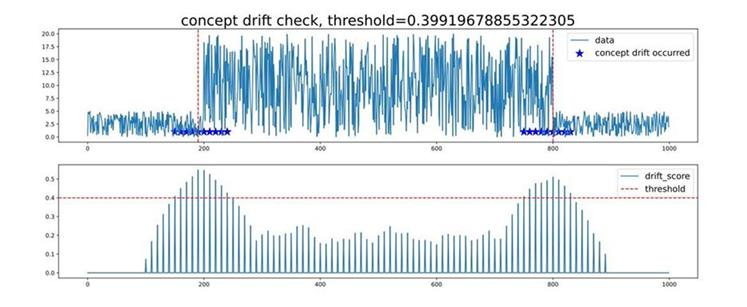

实现时序数据概念漂移检测应用

概述
概念漂移（Concept Drift）是AI学习领域的一种重要数据现象，表现为在线推理数据（实时分布） 与训练阶段（历史分布）不一致。概念漂移检测能够及时发现数据分布变化，提前预测模型失效征兆，对AI模型的及时调整具有重要意义。
概念漂移检测本质上是检测数据分布变化，本示例提出一种检测数据变化的方法，对比新窗口数据的特征是否足够偏离历史窗口特征，如若偏离程度大于某一阈值，则数据发生概念漂移。
本例会实现一个简单的时序数据概念漂移检测的功能，整体流程如下：
下载公开数据集或构造数据。
定义概念漂移类参数。
调用概念漂移检测函数。
查看结果。
准备环节
确保已经正确安装了MindSpore。如果没有，可以通过MindSpore安装页面进行安装。
下载数据集
示例中用到金融领域公开数据集：标普500指数记录的美国股市平均记录。
将数据集下载并解压到本地路径下，目录结构如下：
├── archive
├── individual_stocks_5yr
├──individual_stocks_5yr
数据路径：archive/individual_stocks_5yr/individual_stocks_5yr。文件夹内每一个csv文件为一组数据用例。
导入Python库&模块
在使用前，需要导入需要的Python库。
import numpy
import matplotlib
import itertools
import mindarmour
数据处理
从数据路径：archive/individual_stocks_5yr/individual_stocks_5yr 中打开一个数据用例。
import numpy as np
DATA_FILE = r'archive/individual_stocks_5yr/individual_stocks_5yr/AEE_data.csv'
data = np.loadtxt(DATA_FILE, str, delimiter=",")
data数据包含包含了date，open，high，low，close，volume，Name列 ，其中open，high，low，close，volume为数值列，可以选择数值列中的某一列或某几列进行概念漂移检测。
data = data[1:, 2].astype('float64') # 选择第2列
或
data = data[1:, 2: 4].astype('float64') # 选择第2-4列
为了方便样例使用，可以通过构造的方式获得数据，如下方代码所示。
import numpy as np
data = 5*np.random.rand(1000)
data[200: 800] = 50*np.random.rand(600)
初始化概念漂移检测模块
导入概念漂移检测模块，并进行初始化，示例代码如下：
from mindarmour import ConceptDriftCheckTimeSeries
concept = ConceptDriftCheckTimeSeries(window_size=100, rolling_window=10, step=10, threshold_index=1.5,need_label=False)
初始化参数含义：
window_size(int)：概念窗口。数值不小于10，如果给定输入数据data的长度，window_size范围在[10, 1/3*len(data)] 之间。一般，如果时序数据为周期性函数，window_size的大小可以选择2-5倍的周期长度。举例，data的长度为1000，周期为30，那么window_size的范围可以在[10, 333]，考虑到数据周期性，window_size可以取值90。rolling_window(int)：平滑窗口。数值大小 [1,window_size]。默认值：10。step(int): 窗口滑动步长。数值范围在 [1,window_size]之间。默认值：10。threshold_index(float)：阈值系数。阈值系数越高，阈值越大。默认值: 1.5。need_label(bool)：标签需求。False或True。如果为True， 表明需要概念漂移标签。如果为False， 则不需要概念漂移标签。默认值：False。
启动概念漂移检测
完成模块初始化后，调用概念漂移检测函数concept_check。
drift_score, threshold, concept_drift_location = concept.concept_check(data)
返回值
drift_score(numpy.ndarray)：概念漂移分数。针对输入data，获得其发生概念漂移的置信分数。分数越高，概念漂移的可能性越大。threshold(float)：概念漂移阈值。根据threshold_index(float)计算获得的阈值大小。concept_drift_location(list)：概念漂移发生位置。返回概念漂移发生的x轴对应位置，通常为某个x轴区域。
查看结果
当执行完concept.concept_check(data)，会将执行结果保存为pdf，命名为”concept_drift_check.pdf”。
如下图所示：

子图1：用户输入的数据data。数据中发生概念漂移的位置用蓝色五星标出，红色虚线（竖直方向）表示概念漂移发生最明显的位置。
子图2：概念漂移置信分数drift_score（针对子图1中的数据），分数越高，概念漂移的可能性越大。红色虚线表示判断概念漂移的阈值threshold，虚线之上的drift_score所对应的横轴位置，判定为发生概念漂移。threshold的大小可根据threshold_index进行调节。